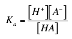
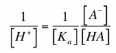
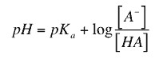

Consider the ionization of a weak acid HA which has some pKa. It is often convenient to be able to relate the pH of a solution of a weak acid to the pKa of the acid and the extent of ionization. The reaction would be
HA (reversible arrows) H+ + A-
The acid dissociation constant (Ka) for this reaction would be given by the equation

This equation can be rearranged to isolate the hydrogen ion concentration on the left, because, remember, we want an equation relating the pH of the solution to the pKa and the extent of ionization of the weak acid. The rearranged form of the equation is

By definition, log 1/ [H+] = pH , and log 1/Ka = pKa , so that by taking the log of the equation above, we get the equation

This is the well-known Henderson-Hasselbalch equation that is often used to perform the calculations required in preparation of buffers for use in the laboratory, or other applications. Notice several interesting facts about this equation.
First, if the pH = pKa, the log of the ratio of dissociate acid and associated acid will be zero, so the concentrations of the two species will be the same. In other words, when the pH equals the pKa, the acid will be half dissociated.
Second, notice that as the pH increases or decreases by one unit relative to the pKa, the ratio of the dissociate form to the associated form of the acid changes by factors of 10. That is, if the pH of a solution is 6 and the pKa is 7, the ratio of [ A-]/[ HA] will be 0.1, will if the pH were 5, the ratio would be 0.01 and if the pH were 7, the ratio would be 1.
Also, note that if the pH is below the pKa, the ratio will be < 1, while if the pH is above the pKa, the ratio will be >1. In short, there is a lot of information in the Henderson-Hasselbalch equation. You would be wise to study this equation to understand its various ramifications.